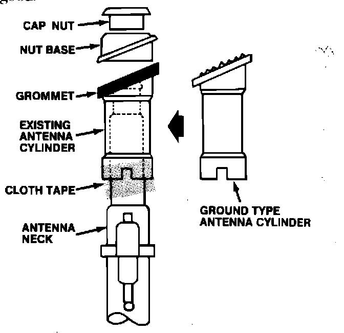

Audio - Poor FM Reception
88acura01August 15, 1988
YEAR MODEL APPLICATION
'86-88 LEGEND SEDAN See
'87-88 LEGEND COUPE Affected
VINs
88-013
Legend: Poor FM Reception (Supersedes 88-013 dated June 20, 1988)
SYMPTOM
FM signal becomes distorted and then fades.
VEHICLES AFFECTED
'86-87 Legend Sedan - All
'88 Legend Sedan - up to . . . 041312
'87 Legend Coupe - All
'88 Legend Coupe - up to . . . 019067
PROBABLE CAUSE
The antenna is not properly grounded.

CORRECTIVE ACTION
Replace the antenna cylinder with a grounding type cylinder listed under PARTS INFORMATION.
1. Remove the antenna (see Service Manual).
NOTE: Use special tool 07JAA-001000A to remove the cap nut.
2. Remove the black cloth tape from the antenna cylinder.
3. Discard the existing cylinder and grommet.
4. Install the grounding type cylinder and tape it to the antenna.
NOTE: Before installing the antenna, clean the paint from the body where the black wire, from the antenna motor, attaches.
5. Install antenna and then test that FM reception is good.
PARTS INFORMATION
39163-SD4-305 ('86-87 Legend Sedan) 39163-SD4-306 ('88 Legend Sedan) 39163-SG0-305 ('87-88 Legend Coupe)
WARRANTY CLAIM INFORMATION
Operation number: 015115
Flat rate time: 0.5 hours
Failed P/N: 39152-SD4-003
Defect code: 064 [NEW]
Contention code: B07